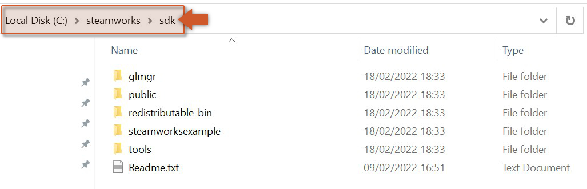
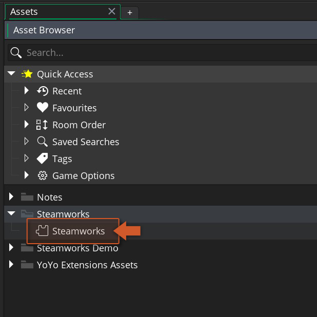
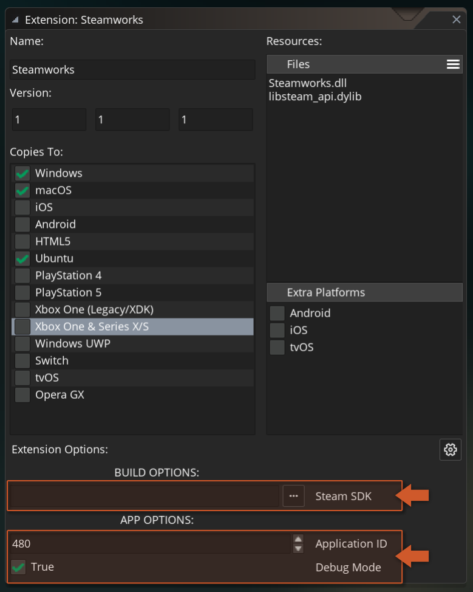

Getting Started
To use the Steamworks extension, follow these steps:
- Import this Steamworks extension into your project, if you haven't done that already.
- The Steam client needs to be installed, running and with an account logged in (official site) while testing from the IDE.
- Download the Steamworks SDK (version 1.63) from the Steamworks partner site and extract the contents of the zip into a directory of your choice (e.g.
C:\steamworks\sdk).

- To configure the extension, double-click on the Steamworks extension in your Asset Browser in the IDE.

- At the bottom of the extension window you will find the configurable options, grouped into Build Options, App Options and Extra Options.

The Steam SDK build option must point at the folder you extracted in step 3, and the Application ID app option must hold your game's app ID from the Steamworks dashboard. Full details on every option: Extension Options.
Note
While developing from the IDE, set Debug to Enabled. With Auto, a game that was not launched through Steam is relaunched through it and the process started by the IDE exits at once. Set it back to Auto before publishing.
Initialising
There is nothing to call: the extension initialises the Steamworks API before the first frame, using the Application ID from the extension options. Check that it succeeded before using any other function, and read the reason if it did not:
/// Create Event
if (!steam_api_is_initialized())
{
show_debug_message("Steam init failed: " + steam_api_last_error());
}
The above code checks the result of the automatic initialisation with steam_api_is_initialized, and prints the failure reason from steam_api_last_error when it did not succeed. The usual reasons are the Steam client not running, or the wrong app ID.
Running the callbacks
Everything asynchronous in this extension - every callback passed to a function, and every callback set with a steam_*_set_callback_* function - is delivered by steam_api_run_callbacks. You must call it every frame from a persistent controller object, or no callback will ever fire:
/// Step Event
steam_api_run_callbacks();
The above code dispatches the pending Steam callbacks once per step.
Calling a function
Synchronous functions return their result directly:
/// Create Event
show_debug_message("Hello " + steam_friends_get_persona_name());
Asynchronous functions take a callback as their last argument and return nothing useful themselves; the result arrives later, during a call to steam_api_run_callbacks, as a single struct argument:
/// Mouse Left Pressed Event
steam_userstats_find_leaderboard("HighScores", function(_result)
{
if (_result.leaderboard_found)
{
leaderboard_handle = _result.leaderboard_handle;
}
else
{
show_debug_message("Leaderboard not found");
}
});
The above code asks Steam for the handle of the leaderboard named "HighScores" with steam_userstats_find_leaderboard. The callback runs once, with a SteamUserStatsLeaderboardFindResult struct: when leaderboard_found is true the handle is stored in an instance variable for later use, otherwise a message is printed. Each function's page lists the struct its callback receives.
Handling Steam events
Events that Steam raises on its own - the overlay opening, a friend's status changing, a lobby invite arriving - are delivered to a callback you register once with the matching steam_*_set_callback_* function, and stop when you call the matching steam_*_clear_callback_* function:
/// Create Event
steam_friends_set_callback_game_overlay_activated(function(_result)
{
global.paused = _result.active;
});
The above code registers a callback with steam_friends_set_callback_game_overlay_activated that pauses the game while the Steam overlay is open. The callback receives a SteamFriendsGameOverlayActivated struct every time the overlay is shown or hidden.
Shutting down
There is nothing to call: the extension shuts the Steamworks API down when the game ends, clearing every registered callback. steam_api_shutdown exists only for the rare case where you want to stop using Steam earlier.
Testing
Run the game from the IDE with Debug set to Enabled and the Steam client logged in. With the default Application ID of 480 (Valve's test app, Spacewar) the extension initialises without a Steamworks account of your own, which is enough to try the friends, overlay and inventory functions. Achievements, stats and leaderboards need your own app ID and their definitions set up on the Steamworks dashboard first.